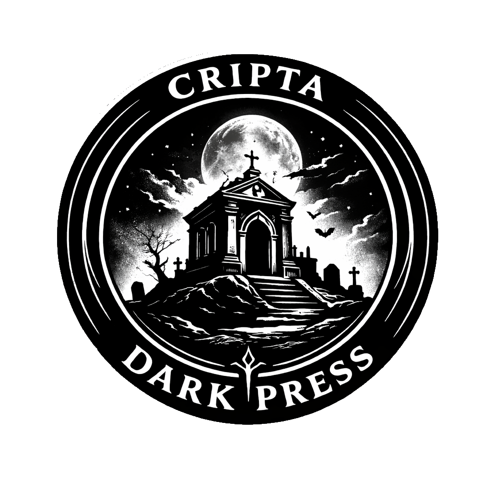

Sigillo di curatela
Il sito è in preparazione
Il sigillo indica che l’opera è stata curata dal progetto. Ogni autore conserva i propri diritti e gestisce autonomamente la pubblicazione attraverso la piattaforma scelta.
Prossimamente online